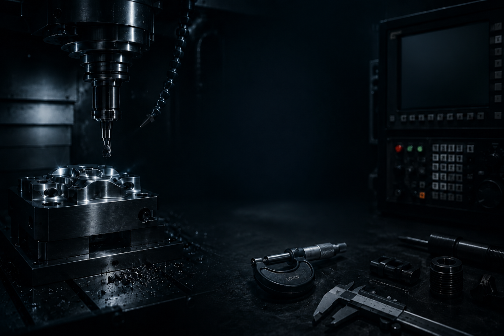
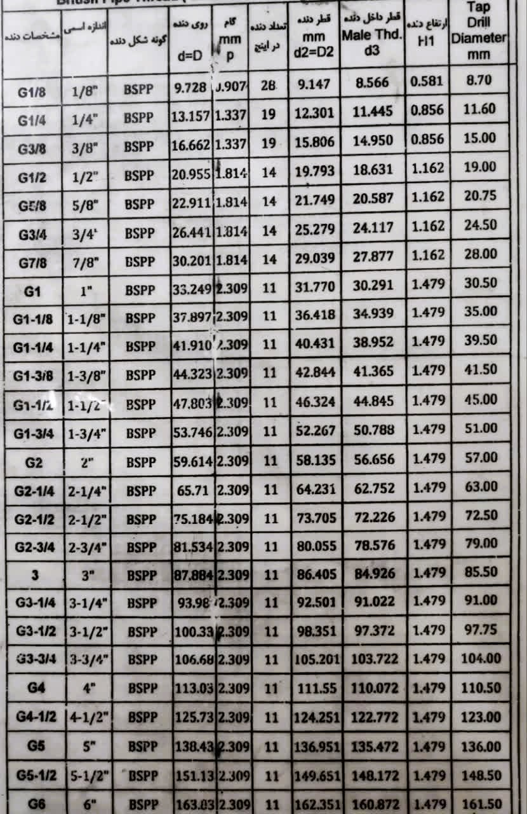

حرکت محورها و بستن قطعه
ابتدا برای بستن قطعه کار مورد نظر، نیاز به حرکت محورها داریم.
MACHINE → MANUAL → X.Y.Z.U.V
سپس قطعه کار را بسته و رفرنس را طبق رفرنس تعیینشده توسط برنامهنویس میگیریم.
رزوههای متریک دنده

Professional CNC Machining Assistant
یکی از جزوههای زیر را انتخاب کنید.
یکی از جداول زیر را انتخاب کنید.
یکی از ابزارهای زیر را انتخاب کنید.
انتخاب قلاویز
یک قلاویز متریک از M2 تا M20 انتخاب کن.
نوع متریال را انتخاب کنید.
نوع فولاد را انتخاب کنید.
بانک متریال
بانک متریال
فولاد H13 یکی از معروفترین فولادهای گرمکار جهان است. به دلیل مقاومت بالا در برابر حرارت، شوک حرارتی و سایش، برای قالبهای دایکاست و فورج بسیار مناسب است.
کاربردها
مزایا
معایب
معادلها
DIN: 1.2344
AISI: H13
بانک متریال
فولاد D2 یک فولاد سردکار با درصد کربن و کروم بالا است که به دلیل مقاومت سایشی فوقالعاده، برای قالبهای برش و پانچ استفاده میشود.
کاربردها
مزایا
معایب
معادلها
DIN: 1.2379
AISI: D2
بانک متریال
بانک متریال
فولاد 1.2510 (O1) یک فولاد ابزار سردکار با سختشوندگی در روغن (Oil Hardening) است. این فولاد به دلیل تعادل مناسب بین سختی، مقاومت سایشی و ماشینکاری، یکی از پرکاربردترین فولادها برای ساخت ابزارهای دقیق و قالبهای سبک محسوب میشود.
کاربردها
مزایا
معایب
معادلها
DIN: 1.2510
AISI: O1
JIS: SKS3
بانک متریال
بانک متریال
فولاد 1.2083 یک فولاد زنگنزن مخصوص قالبسازی است که برای قالبهای شفاف، پزشکی و مواد خورنده استفاده میشود.
کاربردها
مزایا
معایب
معادلها
DIN: 1.2083
AISI: 420
بانک متریال
فولاد P20 (1.2311) یکی از پرکاربردترین فولادهای قالبسازی در صنعت است. این فولاد به صورت پیشسخت شده عرضه میشود و برای ساخت قالبهای تزریق پلاستیک با تیراژ متوسط تا زیاد استفاده میشود.
کاربردها
مزایا
معایب
معادلها
DIN: 1.2311
AISI: P20
بانک متریال
فولاد 1.2312 نسخه ماشینکاریشده P20 است که با افزودن گوگرد، ماشینکاری آن بسیار آسانتر شده است و در قالبسازی ایران کاربرد فراوانی دارد.
کاربردها
مزایا
معایب
معادلها
DIN: 1.2312
AISI: P20 + S
بانک متریال
فولاد 1.2738 نسخه ارتقاء یافته فولاد P20 است که با افزودن عنصر نیکل (Ni)، استحکام، چقرمگی و یکنواختی سختی آن در مقاطع بزرگ افزایش یافته است. این فولاد به صورت پیشسخت شده (Pre Hardened) عرضه میشود و معمولاً بدون نیاز به عملیات حرارتی مجدد قابل استفاده است.
کاربردها
مزایا
معایب
معادلها
DIN: 1.2738
AISI: P20 + Ni
دستگاه وایرکات ایزی پایپ
نوع قطعه یا عملیات را انتخاب کن تا تنظیمات پیشنهادی نمایش داده شود.
جزوه آموزشی
ابتدا برای بستن قطعه کار مورد نظر، نیاز به حرکت محورها داریم.
سپس قطعه کار را بسته و رفرنس را طبق رفرنس تعیینشده توسط برنامهنویس میگیریم.
این دستور برای رفرنس کردن دایره، مانند ماتریس تریم، استفاده میشود.
دستگاه به صورت اتوماتیک وسط دایره را پیدا کرده و رفرنس را وسط دایره قرار میدهد.
برای گرفتن رفرنس در گوشه کار، ابتدا محور مورد نظر را نزدیک کار میکنیم، سپس به سمتی که نیاز به رفرنس است، محور X یا Y را با علامت مثبت یا منفی تنظیم میکنیم.
این دستور برای رفرنس کردن یک سطح قطعه کار مورد استفاده قرار میگیرد.
برای رفرنس گرفتن وسط محور X و Y به صورت جداگانه از دستور زیر استفاده میکنیم.
سپس دستگاه به صورت جداگانه وسط دو محور را پیدا کرده و رفرنس را وسط قرار میدهد.
بعد از پیدا کردن موقعیت رفرنس، باید مقدار عدد X و Y را صفر کنیم.
برای حرکت خطی، ماشینکاری و نصف کردن قالبهای گرد از دستور زیر استفاده میکنیم.
برای قالب گرد حدود 140 میلیمتر، دستور برش به این شکل نوشته میشود:
فلش را در حالت 00 فلاپی قرار داده و سپس مسیر زیر را اجرا میکنیم.
سپس فایل مورد نظر را انتخاب میکنیم و برای اجرای آن:
قبل از استارت برنامه باید درب تانک بسته و آب مخزن پر شود.
پس از شروع حرکت دستگاه، تنظیمات فشار آب، کشش سیم، ولتاژ جرقه و سایر تنظیمات را طبق جدول مناسب هر قطعه تنظیم میکنیم.
تنظیم سرعت پاشش آب
تنظیم سرعت سیم
تنظیم پیشروی و قدرت جرقه دستگاه
برای رفتن به حالت سیمولیشن
جزوه آموزشی
ابتدا دستگاه را روشن میکنیم. قبل از شروع کار، همیشه بعد از روشن کردن دستگاه باید محورها به حالت صفر عدد ماشین برسند تا چراغ مربوط به صفر محورهای X، Y و Z روشن شود.
ابتدا کلید ZRN را روشن کرده و ولوم را روی RAPID قرار میدهیم. سپس ولوم AXIS را روی محور Z گذاشته و کلید مثبت را نگه میداریم تا دستگاه به نقطه صفر ماشین حرکت کند.
بعد از روشن شدن چراغ محور Z، همین کار را برای بقیه محورها انجام میدهیم تا سه چراغ رفرنس ماشین روشن شود.
نکته: این کار فقط یک بار انجام میشود؛ زمانی که دستگاه خاموش بوده و تازه راهاندازی شده است.
قطعه کار را داخل گیره بسته و طبق رفرنس اعلامشده توسط برنامهنویس پیش میرویم. برای مثال در قالب گرد 125 تن، رفرنس Y در قسمت فک ثابت و رفرنس X وسط قالب است.
اپراتور باید با استفاده از ابزار تاچ پراپ شروع به رفرنسگیری کند. ابتدا تاچ پراپ را با ولوم MDI فراخوانی کرده و ابزار را در محور Y نزدیک قطعه کار میکنیم.
ابتدا با مقدار 0.1 به قطعه نزدیک میشویم. وقتی بوق اول خورد، 0.1 برمیگردیم، هندویل را روی 0.01 تنظیم میکنیم و این بار به صورت صدمی نزدیک قطعه میشویم.
وقتی بوق ممتد شد، باید نصف قطر گوی تاچ پراپ را با استفاده از فضای REL جلو بیاییم.
سپس باید ABS را در G54 یا همان 01 صفر کنیم. برای این منظور عدد ماشین دستگاه را که در قسمت POS ALL قرار دارد، بدون هیچ تغییری در قسمت OFFSET جلوی 01 وارد میکنیم.
بعد از آن در قسمت POS ALL وقتی کلید RESET را میزنیم، عدد ABS باید صفر شود. اگر عدد صفر شد یعنی مسیر درست بوده و عدد ماشین درست وارد شده است.
بقیه محورها نیز به همین صورت رفرنسگیری میشوند و در آخر باید همه محورها چک شوند.
برای رفرنس رفتن محور Z باید ابزار مرجع مشخصشده دستگاه فانوک را فراخوانی کنیم. در این دستگاه ابزار مرجع، ابزار 16 است.
سپس با استفاده از کاغذ 0.03 یا Z ZERO تاچ کرده و عدد آن را مانند محورهای دیگر در سمت 01 قرار میدهیم.
برای افستگیری ابزارها به ابزار Z ZERO نیاز داریم. ابتدا ابزار مرجع، یعنی ابزار 16، را فراخوانی کرده و آن را روی Z ZERO در قسمت صفر تنظیم میکنیم.
سپس عدد REL Z را صفر میکنیم. در این حالت هم در Z ZERO عدد صفر است و هم در محور Z REL.
حالا ابزار مورد نظر را فراخوانی کرده و آن را روی Z ZERO در قسمت صفر تنظیم میکنیم. سپس با کلید OFFSET به قسمت افست ابزارها میرویم.
برای مثال اگر ابزار 8 فراخوانی شده باشد، باید عدد Z REL را در قسمت شماره ابزار 8 وارد کرده و کلید INPUT را بزنیم. با این روش افست ابزار 8 نسبت به ابزار مرجع گرفته میشود.
بعد از اینکه رفرنس طبق برنامه گرفته شد و افست ابزارها وارد شد، نوبت اجرای برنامه است.
فلش را وارد مبدل دستگاه کرده و با استفاده از قلم مبدل، برنامه مورد نظر را آورده و گزینه SAVE را میزنیم.
برای اجرای برنامه از کنترل دستگاه، ولوم را روی حالت TAPE قرار داده و با استفاده از کلید CYS برنامه را اجرا میکنیم.
جزوه آموزشی
دستگاه را روشن میکنیم و کلید CE را میزنیم. سپس کلید سفید I را میزنیم تا درایو محورها از حالت EMERGENCY خارج شود.
بعد از آن، مانند دستگاه CNC فانوک، دستگاه باید به محل صفر ماشین برود.
برای رفرنس کردن، ولوم FEED RATE را روی 100 درصد قرار میدهیم و در فضای REFRENCE دستگاه، کلید سبز اصلی CYS را سه بار میزنیم.
در این حالت دستگاه ابتدا محور Z، سپس X و در آخر Y را به محل صفر ماشین میبرد. بعد از اتمام، دستگاه به صورت اتوماتیک وارد فضای POS میشود.
نکته: در دستگاه هایدن هاین برخلاف فانوک که فضای REL و ABS دارد، فقط یک فضای POS داریم.
برای تعویض ابزار، مانند دستگاه فانوک وارد حالت MDI میشویم، اما دستور را مطابق زبان دستگاه هایدن هاین مینویسیم. مثال زیر برای تعویض به ابزار 16 است.
با این دستور، دستگاه تعویض ابزار به ابزار 16 را شروع میکند.
نکته: برای ادیت برنامه، کلید راست ادیت را فعال و کلید چپ ادیت را غیر فعال میکنیم.
ابتدا با دستور گفتهشده از MDI، ابزار تاچ پراپ را فراخوانی میکنیم. سپس با استفاده از کلیدهای RAPID و محورهای X، Y و Z، ابزار را به قطعه نزدیک میکنیم.
بعد مطابق مطالب گفتهشده در جزوه فانوک، تاچ میکنیم. برای صفر کردن محورهای X، Y و Z باید از کلید DATUM SET استفاده کنیم.
ابتدا مانند دستگاه فانوک، ابزار مرجع را میآوریم. در فرز هایدن هاین نیز ابزار مرجع، ابزار 16 است.
با Z ZERO عدد Z را با گزینه DATUM SET صفر میکنیم. سپس ابزار بعدی را آورده و با Z ZERO تاچ میگیریم.
بعد با استفاده از گزینه TOOL TABLE فضای افست باز میشود. با فعال کردن گزینه EDIT روی شماره ابزار مورد نظر میرویم.
در قسمت L، که همان طول ابزار است، با زدن یک بار کلید _!_ عدد L تغییر میکند. سپس با گزینه END از فضای افست خارج میشویم. بقیه ابزارها نیز به همین روش افستگیری میشوند.
با استفاده از کلید مربوطه و گزینه WINDOW، ابتدا در قسمت چپ پنجره وارد RS232 میشویم.
برنامه مورد نظر را با گزینه COPY وارد هارد دستگاه، که TNC نام دارد، میکنیم.
بعد از آن وارد فضای اجرای برنامه شده، روی برنامه مورد نظر ENT میزنیم و برنامه را با گزینه CYS اجرا میکنیم.
جزوه آموزشی
ابتدا دستگاه را روشن میکنیم. قبل از شروع کار همیشه بعد از روشن کردن دستگاه باید محورهای X و Z به صفر ماشین برسند تا چراغ مربوط به صفر محورها روشن شود.
دستگاه به صورت اتوماتیک به صفر ماشین رسیده و آماده کار خواهد بود.
در قسمت POSITION دو پنجره مهم REL و ABS وجود دارد.
REL برای صفر کردن دستی محورها و ABS برای تنظیم افست ابزارها و اجرای برنامه استفاده میشود.
در فضای MDI میتوان دستورات تک خطی اجرا کرد.
روشن کردن اسپیندل ساعتگرد با دور ثابت 500 دور.
ابزار مرجع دستگاه، ابزار T808 است.
ابزار را توسط MDI فراخوانی کرده، به قطعه نزدیک کنید و پیشانی تراشی انجام دهید.
سپس محور Z را مطابق رفرنس برنامه صفر کنید. اگر رفرنس وسط نوک ابزار باشد، ابتدا مقدار شعاع نوک ابزار را در REL جبران کرده و سپس ABS را صفر نمایید.
مقدار صفر را در OFFSET قسمت Z ابزار 00 وارد کرده و سپس مقدار معکوس عدد ABS را ثبت کنید تا محور Z دقیقاً صفر شود.
محور X نیز به همین روش تنظیم میشود.
ابزارهای دیگر را به صورت دستی فراخوانی کنید.
با تاچ کردن ابزار به قطعه، مقادیر X و Z موجود در ABS را بدون تغییر در قسمت OFFSET همان ابزار وارد نمایید.
تمام ابزارها نسبت به ابزار مرجع T808 افست گرفته میشوند.
فلش را به دستگاه متصل کنید.
برنامه مورد نظر را انتخاب کنید.
دستگاه اجرای برنامه را آغاز میکند.
ماشین حساب مهندسی
ماشین حساب تراش
جدول استاندارد BSPP
